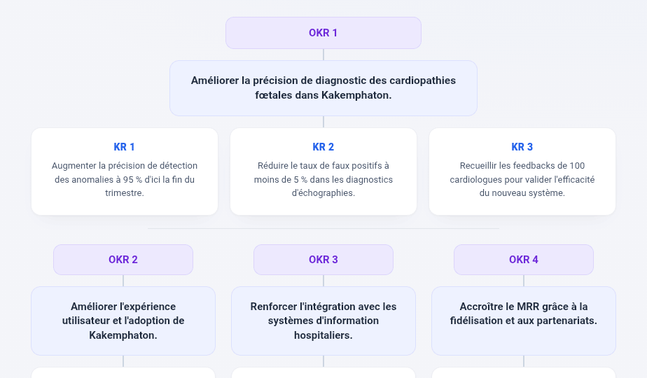

Product Manager · 15 ans
Transformer la vision produit en valeur business mesurable.
Plus de 15 années dédiées à l'intelligence économique et au Product Management. Co-conception de solutions B2B SaaS pour la détection et la qualification de leads commerciaux, en environnement multi-pays.
Expérience globale
15 +
ans dont 12 en Product Management
Terrain de jeu
SaaS B2B
Discovery
Delivery
Business Unit multi-pays
Valeur business
Rétention
Identifier et prioriser les problèmes réels.
Adoption
Itérer jusqu'à l'usage avéré.
Growth
Scaler ce qui crée de la valeur.
Parcours professionnel
2 postes · 1 entreprise
DEPUIS 2014
· poste actuel
Product Manager
Vecteur Plus — Bouguenais (44)
Innovation & lancement : piloter les produits B2B SaaS de l'idée à la spécification, du business model au go-to-market.Vision & stratégie : porter la roadmap produit à l'échelle de la BU Europe (France, Pays-Bas, Belgique) et du groupe InfoPro Digital.Discovery & delivery : conduire les entretiens clients, analyser les besoins, prioriser par la valeur et gérer le backlog et les dépendances.Performance : cartographier et simplifier les processus afin de réduire les coûts opérationnels et la dette produit.Croissance : identifier et activer les leviers d'acquisition, de fidélisation et d'up-sell.
SaaS B2B
Discovery / Delivery
InfoPro Digital
Multi-BU
2009 — 2014
OPS — Service Intelligence Marché
Vecteur Plus — Bouguenais (44)
Amélioration continue : déployer de nouveaux outils et coordonner la production du service études.Impact : automatiser la production des tendances de marché, avec un coût de production divisé par trois .
Quelques exemples d'impact atteints
RÉALISATIONS · VECTEUR PLUS
01
Repenser le produit de détection et qualification de leads privés
−6 ETP
automatisation des tâches
+20%
projets livrés clients
02
Déployer un produit sociétés temps réel, intégré via API
−1 ETP
95% de temps économisés
03
Restructurer la gestion des zones géographiques
−5%
projets livrés en double
−10%
temps de dédoublonnage
04
Centraliser le traitement téléphonique des leads (FR/NL/BE)
−90%
de retard de livraison
−3
technologies à maintenir
05
Améliorer le volume de sociétés sur les leads
+10%
d'intervenants livrés
“
Entre la stratégie qui s'écrit et le produit qui se livre, le rôle du Product Manager est de tenir le fil — et de le rendre mesurable .
Expertises produit
4 FAMILLES · 14 SAVOIR-FAIRE
Roadmap, marché, veille & leviers de croissance.
Porter une vision claire — alignement des équipes interfonctionnelles vers des objectifs communs
Définir objectifs & stratégie — répondre aux attentes utilisateurs et aux ambitions business
Identifier des leviers commerciaux — up-sell, fidélisation et acquisition de nouveaux clients
Démarche de veille — marché, concurrence et évolutions législatives
Collaboration & Discovery
Interviews, ateliers et alignement multi-équipes.
Collaborer avec les équipes — intégrer les insights et besoins de chaque persona
Animer des ateliers transverses — co-concevoir les évolutions produits
Collecter les feedbacks — comprendre les problèmes et améliorer l'expérience
Gérer les dépendances — minimiser les risques entre produits, maximiser la cohérence
Backlog vivant, stories Gherkin, pilotage transverse.
Faire vivre le backlog — prioriser selon la valeur utilisateur et business
Tests d'acceptation — alignement avec les attentes et objectifs
Stories & jobs Gherkin — rédaction illustrée par maquettes pour guider les équipes
MVP, A/B, mesure d'impact et data-informed.
Mesurer usages & impacts — amélioration continue des produits
Optimiser en continu — identifier, dérisquer, cartographier les besoins
Expérimenter — prototypes et MVP pour générer de la valeur
Kakemphaton
Side project · exercice de conception · produit fictif
De la vision au prototype
Pour garder la main sur tout le cycle produit, j'ai conçu Kakemphaton — un cas fictif mené de bout en bout. Une même étude de cas , déclinée en onze livrables et quatre phases, du cadrage stratégique à l'interface.
Ouvrir l'étude de cas →
11
pièces
01 Discovery · 3
Terrain, marché, acteurs
02 Stratégie · 4
Valeur, cap, priorités
03 Delivery · 2
Découper, piloter
04 Pilotage · 2
Mesurer, itérer
01 — Discovery Comprendre le terrain, le marché et les acteurs.
02 — Stratégie Définir la valeur, le cap et les priorités.

OKR
Objectifs
Objectifs & résultats clés
Quatre objectifs alignés produit / business, chacun mesuré par trois résultats clés.
Objectifs
Key results
Trimestre
Explorer les OKR →
03 — Delivery Découper et piloter la construction.
04 — Pilotage & itération Mesurer l'impact, puis améliorer le produit.
Studio Décision
Side project · produit réel · conçu & développé de A à Z
Du besoin métier au produit livré
Studio Décision (DataViz Studio) est un Decision Intelligence Workspace que j'ai imaginé, conçu et développé de bout en bout : importer la donnée, composer des dashboards, tracer les décisions et suivre leur impact — dans un seul espace. React / TypeScript, Node & PostgreSQL, assistant IA.
Ouvrir l'étude de cas →
30+
types de
01 Conçu
Produit, cadrage, UX
02 Designé
Design system « Crème »
03 Développé
React · TypeScript · Node
04 Piloté
Données, décisions, IA
Produit réel · le vrai app
Studio Décision — la donnée, jusqu'à la décision
Un espace unique : import, dashboards, pipelines, décisions tracées et assistant IA. La preuve d'un profil produit capable de concevoir et de livrer.
Voir l'étude de cas →
01 — Données & visualisation De l'import brut au dashboard qui parle business.
Import
Données
Import & profilage
CSV, Excel, PostgreSQL et connecteurs. Profilage et détection des types automatiques dès l'import.
CSV
Excel
PostgreSQL
Voir le détail →
Pipelines
Transformation
Pipelines de données
Modéliser, nettoyer et transformer visuellement, étape par étape — rejouable à chaque nouvel import.
Nettoyage
Jointure
Agrégation
Voir le détail →
Dashboards
Visualisation
Dashboards interactifs
Glisser-déposer, plus de 30 types de graphiques, filtres et drill-down en un clic.
30+ graphiques
Filtres
Drill-down
Voir le détail →
02 — Décision & pilotage Relier chaque choix à ses données et à son impact.
Décisions
Pilotage
Décisions tracées
Timeline, arbre de décision, approbations et audit — chaque décision reliée à ses données.
Timeline
Approbations
Audit
Voir le détail →
ROI
Impact
Suivi de l'impact
Relier chaque décision à son résultat réel et suivre le ROI, trimestre après trimestre.
Outcome
ROI
90 jours
Voir le détail →
Export
Partage
Présentations & export
Transformer un dashboard en présentation prête à exporter en PDF ou PowerPoint.
PDF
PowerPoint
Partage
Voir le détail →
03 — Intelligence & ingénierie L'IA au service de la donnée, et le produit derrière.
Assistant IA
IA
Assistant IA & RAG
Interroger ses données en langage naturel et obtenir des réponses sourcées.
Langage naturel
RAG
Sources
Voir le détail →
Stack
Ingénierie
Architecture full-stack
React + TypeScript, Node & PostgreSQL, sync hors-ligne et event store — développé seul.
React
TypeScript
Node · Postgres
Voir le détail →
Design system
Design
Design system « Crème »
Fond crème, accent terracotta, 6 thèmes — cartes blanches, ombres chaudes, interface FR/EN.
Terracotta
6 thèmes
FR · EN
Voir le détail →
”
Philosophie produit
Capitalisons sur nos expériences passées pour construire ensemble un produit réussi — data-informed, centré utilisateur, à impact business mesurable.
Prêt à concevoir la prochaine génération de solutions orientées business et usage.
Mon CV ↓
Boîte à outils
Compétences informatiques
Pour explorer la donnée, prototyper vite et résoudre les problèmes de nos clients.
3T
Studio 3T
Requêtage NoSQL
SQL
Transact SQL
Requêtage base de données
PM
Postman
Test & exploration d'API
BI
Power BI
Analyse & dataviz
Fi
Figma
Maquettage & prototypage
At
Atlassian
Jira & Confluence
SF
Salesforce
CRM & workflows
VS
Visual Studio Code BUILDER
Vibe coding Orchestration Skills IA React Node
Savoir-faire métier
Compétences métiers
Au-delà des outils, les expertises qui structurent ma façon de travailler.
Coût
Rentabilité
Quick-wins
Veille
Benchmark
Scénarii des possibles
Réseaux d'acteurs
Impact
Criticité
Cahier & suite de tests
Apprentissage continu
Formation & diplômes
S'engager dans une formation, c'est prendre activement part à son développement.
Formation continue
GD
Vibe coding : concevoir et construire des applications IA-driven avec React
05/2026 – 09/2026
GDU Campus
Product Builder
SL
Deviens meilleur leader agile
03/2024 – 03/2025
ScrumLife
Développer son leadership
D+
Product designer
05/2024 – 09/2024
D+THINKING
Renforcement de compétences en product design
Diplômes
IC
ICOMTEC
Intelligence Économique et Communication Stratégique
UT
Licence ManInfo — Université de Tours
2006 – 2007
IUT de Tours
Management de l'information
UL
DUT GIDO — Université de Nancy 2
2004 – 2006
Université de Lorraine
Gestion de l'Information et du Document
AN
Baccalauréat L — Académie de Nantes
2004
Académie de Nantes
Titulaire du baccalauréat littéraire
Certifications
Certifications
Se certifier marque le commencement de l'apprentissage, pas la fin.
PSPO II
PSPO II
Professional Scrum Product Owner II
PSM II
PSM II
Professional Scrum Master™ II
PAL
PAL-EBM
Professional Agile Leadership™ — Evidence-Based Management™
PSK I
PSK I
Professional Scrum with Kanban™
CTFL
CTFL
Certified Tester Foundation Level
CTFL
CTFL — AT
Certified Tester Foundation Level — Agile Tester
Trois profils de PM, trois métiers.
Product Manager et Product Owner sont souvent confondus, alors que les périmètres diffèrent. Voici où je me situe.
Capacité produit
Intelligence Produit
13 / 13
Intelligence économique
—
—
Influence & Négociation
—
BASIQUE
BASIQUE Niveau intermédiaire— Hors périmètre
En dehors du produit
Centres d'intérêt
Ce qui nourrit ma curiosité et ma façon de concevoir : observer, fabriquer et détourner la technologie pour de vrais usages.
Grands singes éthologie, comportement et conservation Bricolage & hands-on concevoir de mes mains, réparer, prototyper Développement d'applications coder des outils qui règlent un vrai besoin — Studio Décision, Kakemphaton, une appli de généalogie, un générateur de comptes-rendus en gérontopsychiatrie Génération IA — musique & vidéo création assistée par IA — jusqu'à un album de musique sur le product management
Rejoindre votre équipe produit
M'intégrer au sein de votre équipe produit.
Un Product Manager, prêt à porter votre vision, accompagner vos équipes et délivrer une valeur mesurable.
Échangeons sur votre besoin ↗
Mes engagements
Collaboration à long terme et investissement pérenne dans vos équipes Autonome et orienté résultats d'impact Un alignement avec votre culture produit et votre vision
Vision partagée
Aligner les équipes autour d'une roadmap claire et d'objectifs mesurables.
Posture collaborative
Faciliter les rituels, ouvrir les discussions, désamorcer les silos.
Impact rapide
Apporter de la valeur dès les premiers sprints.